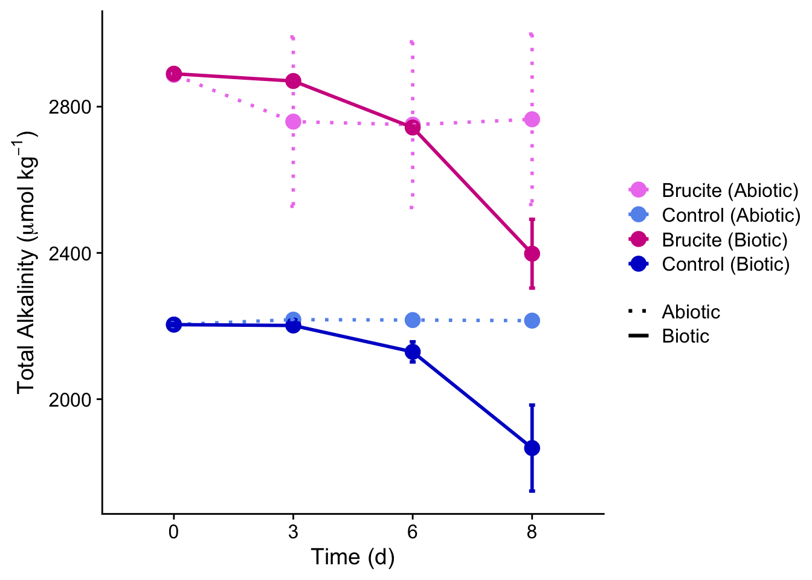

library (tidyverse)
library (janitor)
library (cowplot)
library(ggh4x)
library(viridis)
library(viridisLite)
library(ggpubr)
carb_chem <- read_csv("carb_chem_data.csv") %>% # reading in csv
clean_names()Senior Thesis
Brucite-Inspired Ocean Alkalinity Enhancement: Chalking up the growth and calcification of Emiliania huxleyi
Abstract
Carbon dioxide removal (CDR) has become an increasingly essential area of research in the effort to limit global warming to 2°C above pre-industrial temperature levels–a goal set by the 2015 Paris Agreement. Ocean Alkalinity Enhancement (OAE) is a marine CDR method that aims to capture carbon dioxide (CO2) by adding alkaline solutions to the surface ocean. Alkalinity additions convert aqueous CO2 to stable bicarbonate and carbonate ions, causing a surface-ocean CO2 deficit to be equilibrated by the in-gassing of atmospheric CO2. OAE shows significant potential for carbon removal, yet critical knowledge gaps persist in understanding the response of marine organisms to the rapid shift in alkalinity and pH from added alkalinity. In a study, we conducted a laboratory mesocosm experiment investigating the impacts of a brucite-inspired alkalinity addition (BIAA) for OAE on the growth and calcification in Emiliania huxleyi, a calcareous marine phytoplankton. The treatment used MgCl2 * 6H2O and NaOH to raise alkalinity by ~690 umol kg-1, resulting in a total alkalinity of ~2900 umol kg-1. Our results suggest BIAA enhanced the growth rates of E. huxleyi, suggesting a possible stimulatory effect of increased magnesium concentrations within seawater. Calcification rates, measured as cellular particulate inorganic carbon (PIC), remained stable across treatments; however, the PIC:POC (particulate organic carbon) ratio was significantly higher in BIAA. This is likely a result of reduced POC production within BIAA compared to the Control. Furthermore, the presence of an orange precipitate coincided with the removal of dissolved inorganic phosphate indicates potential nutrient removal in our carboys. Our results further our understanding of the alkaline-specific impacts of a magnesium-rich alkalinity addition on the biogeochemical and physiological processes of E. huxleyi.
Find my complete senior honors thesis here
Thesis Code and Data Visualization
The below visualization represents only a small portion of the code written for this project. Specifically, this graph is Total Alkalinity (TA) plotted over time. This data collected was during the Fall 2024 experiment and analyzed in Winter 2025 for my thesis document. For a full scope of the data and visualizations, view the link in the section above.
Here is the code loading the necessary packages and data.
TA_summ <- carb_chem %>% # creating new object from carb_chem data frame
select(day, condition, treatment, ta_in_mmol_kg_sw) %>% # selecting specific parameter
group_by(day, condition, treatment) %>% # grouping by day, condition, and treatment
summarise(
TA_mean = round(mean(ta_in_mmol_kg_sw), 2), # calculating mean
TA_sd = round(sd(ta_in_mmol_kg_sw), 2), # calculating standard deviation
n = n()
)This code created a new object called TA_summ, extracting only the TA column in addition to other necessary parameters such as day and treatment.
ggplot(data = TA_summ,
aes(x = factor(day),
y = TA_mean,
color = interaction(treatment, condition),
linetype = condition,
group = interaction(treatment, condition))) +
scale_color_manual(
values = c(
"bru.abio" = "violet",
"bru.bio" = "violetred",
"ctrl.abio" = "cornflowerblue",
"ctrl.bio" = "mediumblue"
),
labels = c(
"bru.abio" = "Brucite (Abiotic)",
"bru.bio" = "Brucite (Biotic)",
"ctrl.abio" = "Control (Abiotic)",
"ctrl.bio" = "Control (Biotic)"
)
) +
scale_linetype_manual(
values = c("abio" = "dotted", "bio" = "solid"),
labels = c("abio" = "Abiotic", "bio" = "Biotic")
) +
geom_point(size = 4) +
geom_line(linewidth = 1) +
geom_errorbar(aes(ymin = TA_mean - TA_sd,
ymax = TA_mean + TA_sd),
width = 0.05,
linewidth = 1) +
labs(x = "Time (d)",
y = expression(paste("Total Alkalinity (", mu, "mol kg"^{-1}, ")")),
color = "Color",
linetype = "Line Type") +
theme_cowplot() +
theme(legend.title = element_blank())
This code plotted my data.